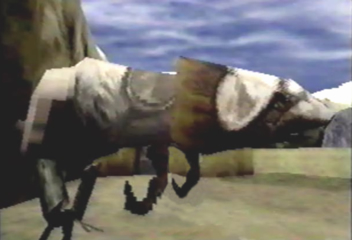

|
 |
 |
|  |
Coolia Found in the Town of Zoah as well as the Caravan, Coolias aren't listed in the "Defeated Enemies Data." Coolias are among the few creatures to be domesticated in the PD world. They dislike Junio Seeds, and can sometimes be very stubborn. There are many different types of Coolias, some appear mamal-like, while others look more reptile-like. There is also an item in PDS called Coolia's Dung. Its description says, "Fossilized Coolia feces from millions of years agao." |